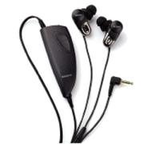

| Sony MDR-NC10 Noise cancelling headphones
Rich brought me some new headphones back from his recent trip to San Francisco. They fit really well into the ears (and cancel a lot of noise that way) and are very comfortable to wear and operate. They take one AAA battery, and I'm not sure how long this will last as I'm still on my first one (Sony claim a single AAA will last for around 60 hours). The noise cancelling element is clever, although a lot of the noise that surrounds me on a daily basis is not regular enough for it to cope with. That said, they do a pretty good job on the tube in the morning. There is also a monitor button on the main unit which can be used to kill the noise from your music, so you can hear any announcements. They work perfectly well without the unit even being switched on, and already cancel more noise than standard headphones because of how they fit into your ear. Now, if only I could find something which would be able to cut down office noise (I sit between 2 rather loud people) then life would be perfect. |
 Related Links:
|
|
Back to index page |